Manual do SAC
Passo a passo de cada aba — Ordens de Serviço, Chamados NFC, Garantia e Cadastros —, com o que o sistema faz a cada clique e para onde a OS vai. Atualizado em 30/10/2026.
Parte 1Antes de começar
Para quem é este manual
Este manual é para quem trabalha no SAC: abrir e acompanhar Ordens de Serviço (OS), atender chamados, conduzir os atendimentos em garantia e manter os cadastros. Ele mostra cada tela, o que cada botão faz, o que o sistema grava quando você clica e para onde a OS vai depois.
Todas as fotos usam dados de exemplo (clientes, veículos e nomes inventados). Nenhuma OS real aparece aqui.
Como cada passo a passo está escrito
- Quando usar: a situação em que você precisa daquele passo.
- Quem faz: quem tem o botão (você, o Laboratório, a Produção, a Qualidade, o Fiscal ou o cliente).
- Passo a passo: os cliques, na ordem.
- O que acontece: o que o sistema grava e quem é avisado.
- Vai para: a etapa seguinte da OS e quem age nela.
O SAC em uma página
O SAC tem quatro abas, no alto da tela:
| Aba | Para que serve | Quando você usa |
|---|---|---|
| Ordens de Serviço | Todo serviço em equipamento do Laboratório ou em veículo: orçamento, conserto, troca, garantia. É a aba principal | O dia todo |
| Chamados NFC | Chamados de suporte que o cliente abre sozinho pelo veículo (etiqueta NFC) | Para atender quem pediu ajuda |
| Garantia | A ficha de cada atendimento em garantia: avaliação, fornecedor, custos, autorização, peças, apontamentos | Antes de abrir qualquer OS de garantia |
| Cadastros | As listas que alimentam a Nova OS: tipos de equipamento, categorias e tipos de serviço | De vez em quando |
Acima das abas fica a Agenda do SAC: compromissos do setor, que você marca como concluídos ou exclui.
A viagem de uma OS
Toda OS passa por etapas. Em cada etapa existe uma pessoa ou setor que precisa agir. O sistema mostra isso em cada OS com a linha "Aguarda: …".
- SAC abre a OS
- Laboratório ou Produção avalia
- SAC envia o orçamento ao cliente
- Cliente aprova
- Laboratório ou Produção executa
- Qualidade confere (veículo)
- SAC envia ao Fiscal
- Fiscal emite a nota
- SAC entrega ao cliente
Duas variações importantes:
- OS sem cobrança (garantia dentro da cobertura ou cortesia): não tem orçamento nem aprovação do cliente e não vai ao Fiscal. Termina na entrega.
- OS de veículo: a Produção marca a data, o SAC confirma com o cliente (o aceite), a Produção executa e a Qualidade confere antes de a OS voltar ao SAC.
Quem é quem nas etapas
| Quem | O que faz na OS |
|---|---|
| SAC (você) | Abre a OS, envia orçamento, registra a resposta do cliente, confirma a data do veículo, envia ao Fiscal, entrega, cancela |
| Laboratório | Diagnostica e executa o conserto dos equipamentos |
| Produção | Marca a data, recebe o veículo, verifica, orça e executa a manutenção veicular |
| Qualidade (CQ) | Confere o serviço do veículo antes de voltar ao SAC |
| Fiscal | Emite a nota fiscal das OS cobradas |
| Cliente | Aprova ou recusa o orçamento e retira o equipamento |
Palavras que aparecem na tela
| Palavra | O que significa |
|---|---|
| OS | Ordem de Serviço. Número no formato OS-0044/2026 (sequência do ano) |
| Etapa | Em que ponto do caminho a OS está (aparece como selo colorido) |
| Aguarda | Quem precisa agir agora (SAC, Laboratório, Produção, Qualidade, Fiscal ou Cliente) |
| OS parada | OS que está 7 dias ou mais na mesma etapa. Aparece em vermelho |
| Cobrada / Sem cobrança | Se o serviço será faturado ao cliente ou não (garantia ou cortesia) |
| Lote | Várias OS abertas juntas (por exemplo, 7 viaturas do mesmo cliente). Aparecem num cartão só no quadro |
| Ficha | O atendimento em garantia da aba Garantia (número GAR-0001/2026) |
| PV | Pedido de venda, quando a OS veio de uma venda do CRM |
| Provisionamento | Marcar a data em que o veículo será atendido |
| Aceite SAC | Você confirma com o cliente a data marcada pela Produção |
| CQ | Controle de Qualidade: a Qualidade confere o serviço do veículo |
| Cortesia | Serviço entregue sem cobrar, com motivo registrado |
| Atendimento já realizado | Serviço que foi feito fora da fábrica antes de a OS ser concluída no sistema |
Parte 2Aba Ordens de Serviço
A tela, de cima para baixo
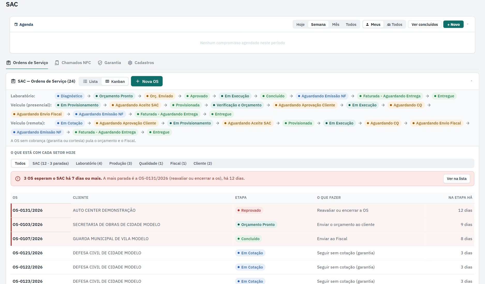
A tela tem sete partes, nesta ordem:
- Agenda do SAC. Compromissos do setor. Filtros Hoje, Semana, Mês, Todos; Meus ou Todos; Ver concluídos. O botão + Nova abre o Novo Compromisso: título, descrição (use @Nome para avisar alguém), data e hora e os participantes.
- As quatro abas (Ordens de Serviço, Chamados NFC, Garantia, Cadastros).
- O título "SAC — Ordens de Serviço (N)" com o número de OS que passam pelos filtros, o seletor Lista | Kanban e o botão verde Nova OS.
- A legenda de fluxo. Três linhas com as etapas de cada caminho (Laboratório, Veículo presencial, Veículo remota). Serve de consulta: mostra por quais etapas a OS passa.
- O painel "O que está com cada setor hoje".
- Os filtros.
- O quadro (Kanban) ou a lista.
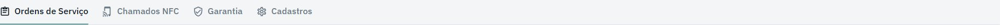
O painel "O que está com cada setor hoje"
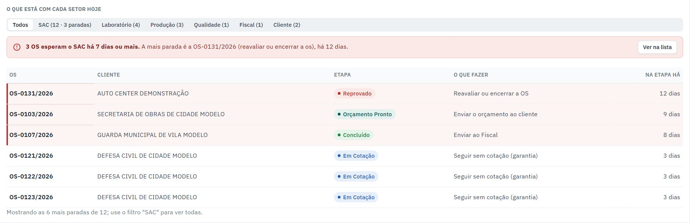
- Os botões SAC, Laboratório, Produção, Qualidade, Fiscal, Cliente mostram quantas OS aguardam cada um e quantas já estão paradas (por exemplo, SAC (12 · 3 paradas)). Clique num deles para filtrar o quadro e a lista só com as OS daquele setor. Todos limpa.
- A faixa vermelha aparece quando há OS esperando o SAC há 7 dias ou mais. Diz qual é a mais parada. O botão Ver na lista abre a lista já filtrada por SAC e por "paradas".
- A tabela mostra as 6 OS mais paradas que são do SAC, com a etapa, o que fazer e há quantos dias a OS está na etapa. Para ver todas, use o botão SAC do painel.
Os filtros
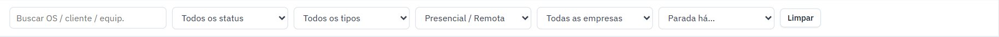
| Filtro | O que faz |
|---|---|
| Buscar OS / cliente / equip. | Procura pelo número da OS, nome do cliente ou equipamento. Não diferencia acento nem maiúscula |
| Todos os status | Mostra só uma etapa (por exemplo, "Orç. Enviado") |
| Todos os tipos | Orçamento, Conserto, Troca ou Garantia |
| Presencial / Remota | Veiculares (todas as OS de veículo), Presencial ou Remota |
| Todas as empresas | ACN, DETECH ou Sem empresa (OS antigas) |
| Parada há… | OS paradas há 7, 15 ou 30 dias ou mais |
| Limpar | Desliga todos os filtros de uma vez, incluindo o painel e a busca |
O quadro (Kanban)
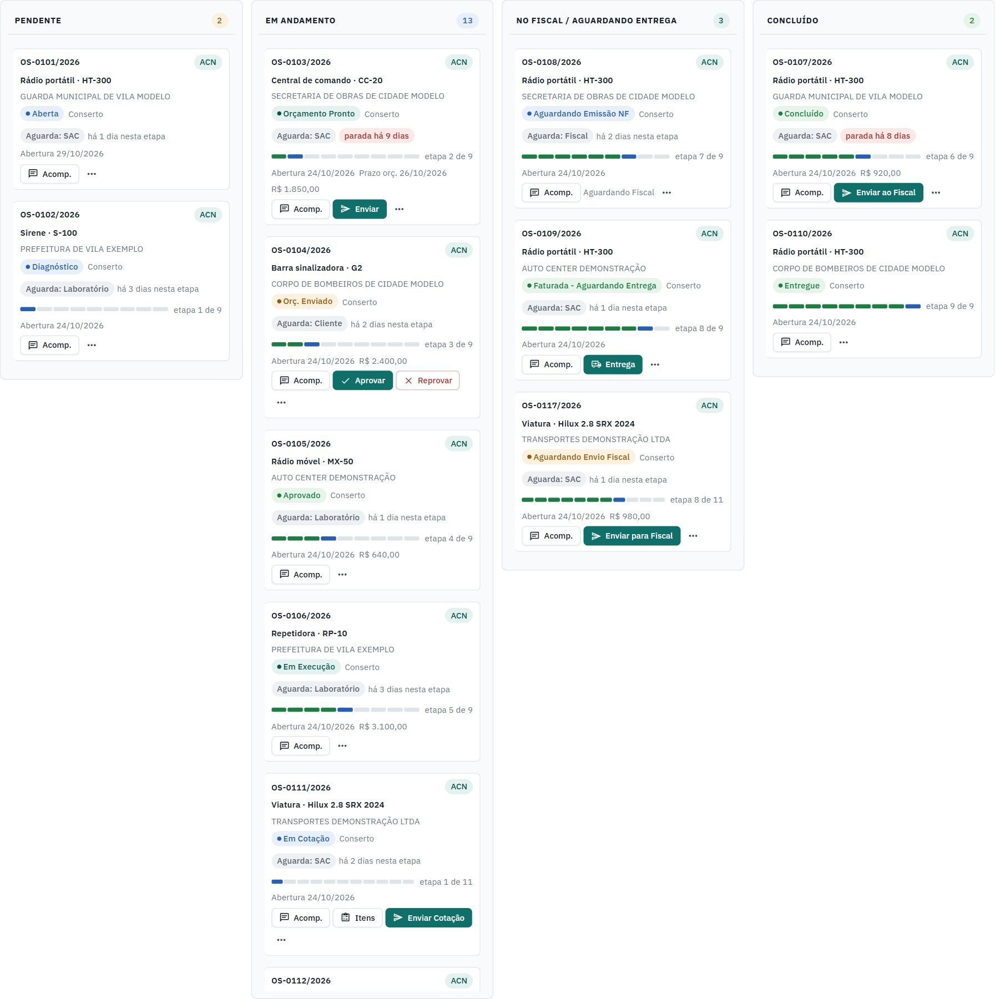
O quadro tem quatro colunas. Cada OS fica na coluna da etapa em que está:
| Coluna | Etapas dentro dela |
|---|---|
| PENDENTE | Aberta, Diagnóstico |
| EM ANDAMENTO | Orçamento Pronto, Orç. Enviado, Aprovado, Em Execução, Em Cotação, Aguardando Aprovação Cliente, Em Provisionamento, Aguardando Aceite SAC, Provisionada, Aguardando Início, Verificação e Orçamento, Aguardando CQ |
| NO FISCAL / AGUARDANDO ENTREGA | Aguardando Envio Fiscal, Aguardando Emissão NF, Faturada - Aguardando Entrega |
| CONCLUÍDO | Concluído, Entregue |
O número no canto de cada coluna é a quantidade de cartões. Você pode arrastar o cartão de uma coluna para outra: veja Mover a OS entre as etapas.
Duas faixas podem aparecer acima do quadro: "N OS reprovadas ficam fora do quadro" e "N OS canceladas ficam fora do quadro e da lista". O botão Ver na lista leva até elas.
A lista
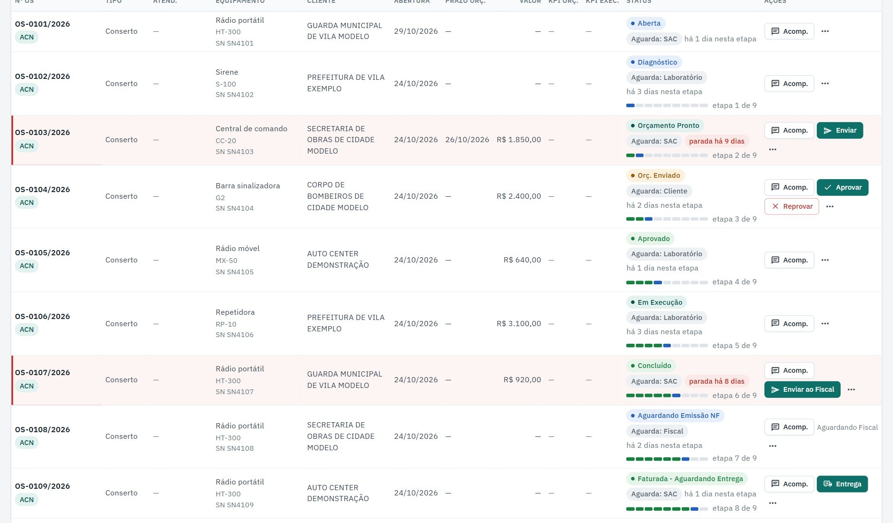
Mostra as mesmas OS em linhas. As colunas são: Nº OS (com empresa, PV, ficha e lote), Tipo, Atend. (Presencial ou Remota), Equipamento, Cliente, Abertura, Prazo Orç., Valor, KPI Orç., KPI Exec., Status e Ações.
- A linha fica rosada quando a OS está Reprovada ou parada.
- KPI Exec. só aparece na OS remota: compara as horas cobradas na cotação com as horas reais apontadas pela Produção. ▲ quer dizer que você cobrou mais horas do que a Produção levou; ▼, menos.
- Os botões da coluna Ações são os mesmos do cartão do quadro.
Como ler o cartão de uma OS
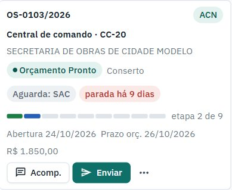
| O que você vê | O que significa |
|---|---|
| OS-0103/2026 | Número da OS |
| ACN ou DETECH | Empresa da OS. Clique para trocar (ou para definir, em OS antiga sem empresa) |
| PV 0999 | Pedido de venda de origem, quando a OS veio do CRM |
| Ficha GAR-0003/2026 | A ficha de garantia da OS. Clique para abrir a ficha |
| Lote | A OS faz parte de um lote |
| Central de comando · CC-20 | Equipamento e modelo |
| Nome do cliente | Cliente |
| Selo colorido (por exemplo, Orçamento Pronto) | A etapa atual, seguida do tipo de serviço |
| Aguarda: SAC | Quem tem que agir agora |
| há 3 dias nesta etapa | Tempo na etapa. Vira "parada há 9 dias", em vermelho, a partir de 7 dias |
| Barra com "etapa 2 de 9" | Quanto da viagem a OS já fez, pelo caminho dela. As partes verdes estão feitas, a azul é a atual |
| Abertura, Prazo orç., R$ | Datas e valor |
| Acomp. | Acompanhamento da OS (anotações do setor) |
| Botão verde (por exemplo, Enviar) | O passo que a OS espera de você nesta etapa |
| ⋯ | Menu com as outras ações |
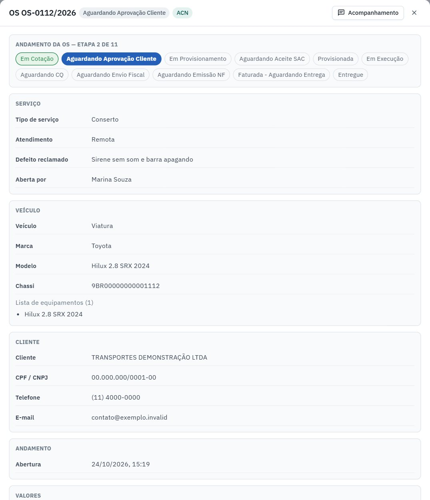
Quando a etapa é de outro setor, no lugar do botão verde aparece um texto cinza: "Aguardando Qualidade", "Aguardando Fiscal", "Aguardando o Laboratório iniciar" ou "Em execução no Laboratório". Não há nada a fazer até o setor agir.
Os caminhos da OS
Cada OS segue um dos cinco caminhos abaixo. A barra de progresso do cartão mostra o caminho dela.
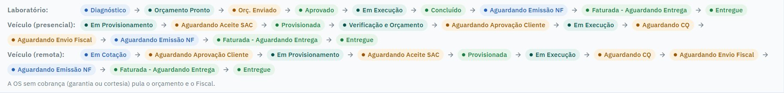
Caminho 1: Laboratório, cobrada
- Diagnóstico
- Orçamento Pronto
- Orç. Enviado
- Aprovado
- Em Execução
- Concluído
- Aguardando Emissão NF
- Faturada - Aguardando Entrega
- Entregue
| Etapa | Quem age | O que acontece | Vai para |
|---|---|---|---|
| Diagnóstico | Laboratório | A OS nasce aqui e o Laboratório recebe uma demanda de diagnóstico. Ele examina e informa o valor | Orçamento Pronto |
| Orçamento Pronto | SAC | Você envia o orçamento ao cliente | Orç. Enviado |
| Orç. Enviado | Cliente (o SAC cobra) | Você registra a resposta: Aprovar ou Reprovar | Aprovado ou Reprovado |
| Aprovado | Laboratório | Nasce a demanda de execução. O Laboratório inicia | Em Execução |
| Em Execução | Laboratório | Conserto em andamento | Concluído |
| Concluído | SAC | Você envia ao Fiscal (valor e CPF/CNPJ da nota) | Aguardando Emissão NF |
| Aguardando Emissão NF | Fiscal | O Fiscal emite a nota | Faturada - Aguardando Entrega |
| Faturada - Aguardando Entrega | SAC | Você entrega ao cliente, com assinatura | Entregue |
Caminho 2: Laboratório, sem cobrança
- Aprovado
- Em Execução
- Concluído
- Entregue
A OS já nasce "Aprovado" (aprovação automática) e o Laboratório recebe a demanda de execução na hora. Depois de Concluído, o SAC faz a Entrega. Não há orçamento e não vai ao Fiscal.
Caminho 3: veículo, avaliação remota, cobrada
- Em Cotação
- Aguardando Aprovação Cliente
- Em Provisionamento
- Aguardando Aceite SAC
- Aguardando Início
- Em Execução
- Aguardando CQ
- Aguardando Envio Fiscal
- Aguardando Emissão NF
- Faturada - Aguardando Entrega
- Entregue
Na avaliação remota o preço sai antes de o veículo chegar. Você monta os itens da cotação e envia ao cliente. Só depois de aprovada a Produção marca a data.
| Etapa | Quem age | O que acontece |
|---|---|---|
| Em Cotação | SAC | Monta os Itens e usa Enviar Cotação |
| Aguardando Aprovação Cliente | Cliente (o SAC registra) | Aprovado ou Recusado |
| Em Provisionamento | Produção | Marca a data e o período do atendimento |
| Aguardando Aceite SAC | SAC | Confirma a data com o cliente |
| Aguardando Início | Produção | Recebe o veículo e inicia |
| Em Execução | Produção | Manutenção em andamento |
| Aguardando CQ | Qualidade | Confere o serviço |
| Aguardando Envio Fiscal | SAC | Informa o número de série de cada item e envia ao Fiscal |
| Aguardando Emissão NF | Fiscal | Emite a nota |
| Faturada - Aguardando Entrega | SAC | Entrega o veículo |
Caminho 4: veículo, avaliação presencial, cobrada
- Em Provisionamento
- Aguardando Aceite SAC
- Provisionada
- Verificação e Orçamento
- Aguardando Aprovação Cliente
- Aguardando Início
- Em Execução
- Aguardando CQ
- Aguardando Envio Fiscal
- Aguardando Emissão NF
- Faturada - Aguardando Entrega
- Entregue
Na avaliação presencial o veículo vem primeiro e o orçamento sai da verificação feita pela Produção.
| Etapa | Quem age | O que acontece |
|---|---|---|
| Em Provisionamento | Produção | Marca a data do atendimento |
| Aguardando Aceite SAC | SAC | Confirma a data com o cliente |
| Provisionada | Produção | Aguarda o veículo. Quando ele chega, a Produção marca Chegou |
| Verificação e Orçamento | Produção | Examina o veículo e insere os materiais do orçamento |
| Aguardando Aprovação Cliente | SAC | Você vê (ou edita) o orçamento e registra Aprovado ou Recusado |
| Aguardando Início | Produção | Atribui o técnico e inicia |
| Em Execução, Aguardando CQ | Produção, Qualidade | Executam e conferem |
| Aguardando Envio Fiscal e depois | SAC, Fiscal | Igual ao caminho 3 |
Caminho 5: veículo, sem cobrança (garantia ou cortesia)
- Em Provisionamento
- Aguardando Aceite SAC
- Provisionada
- Em Execução
- Aguardando CQ
- Concluído
- Entregue
A OS nasce em "Em Provisionamento", sem cotação. A Produção marca a data, o SAC dá o aceite, o veículo é atendido e, depois da Qualidade, a OS vai direto a Concluído; o SAC faz a Entrega do veículo. Não vai ao Fiscal.
Caminho 6: OS lançada pelo card do CRM
A OS que nasce da venda (janela Nova OP / OS do card do CRM) já vem vendida: cobrada, aprovada, sem cotação, com o valor da venda e o pedido de venda (selo PV). Quem lançou escolheu quem executa:
- Laboratório: nasce Aprovado e o Laboratório recebe a demanda de execução. No cartão aparece "Aguardando o Laboratório iniciar" e depois "Em execução no Laboratório".
- O SAC conclui: nasce Em Execução e o botão verde é Concluir OS.
Depois de Concluído, a OS segue o caminho 1: Enviar ao Fiscal e Entrega.
Passo a passo: abrir uma OS (Nova OS)
Quando usar: um cliente trouxe (ou vai trazer) um equipamento, ou pediu um serviço no veículo. Toda OS começa aqui, menos a de garantia, que começa pela ficha (aba Garantia, veja a Parte 4).
Quem faz: o SAC (e quem tem a aba SAC liberada).
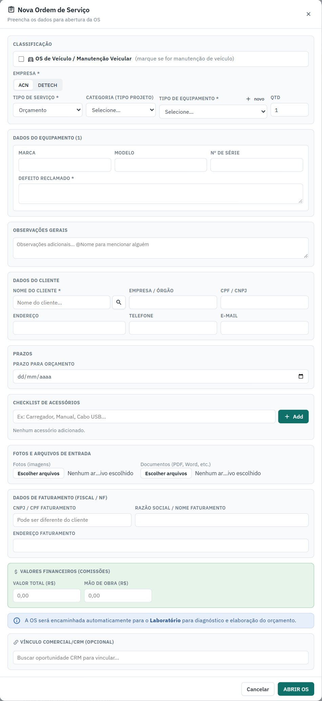
Passo a passo
- Na aba Ordens de Serviço, clique em Nova OS (botão verde, ao lado do título).
- Classificação. Escolha o que é a OS:
- Empresa: ACN ou DETECH (a empresa que vai faturar).
- Tipo de serviço*: Orçamento, Conserto, Troca ou Garantia (a lista vem da aba Cadastros).
- Categoria (tipo projeto): o grupo do serviço (por exemplo, Manutenção Veicular, Serviço Externo, Laboratório).
- Tipo de equipamento*: o aparelho (Barra sinalizadora, Central de comando, Rádio portátil...). Se não existe, use + novo: ele pede o nome e cadastra na hora.
- Qtd: quantos equipamentos iguais (de 1 a 20).
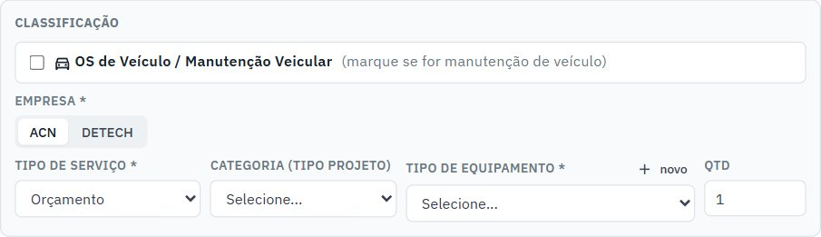
Bloco Classificação - Se for manutenção em veículo, marque a caixa OS de Veículo / Manutenção Veicular. Aparecem a Manutenção Veicular e a escolha do Tipo de avaliação: veja OS de veículo abaixo.
- Dados do equipamento. Para cada equipamento:
- Marca, Modelo (na OS de veículo, no lugar do Modelo você escolhe o Veículo do catálogo; se ele não existe, + Novo cadastra) e Nº de série (na OS de veículo, o Chassi);
- Defeito reclamado*: o que o cliente relata. É obrigatório em cada equipamento.
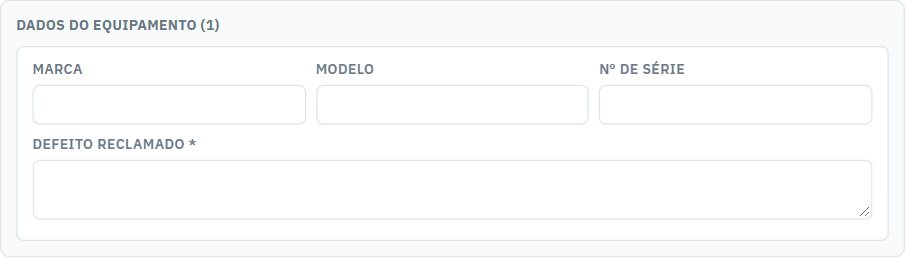
Bloco Dados do equipamento - Observações gerais (opcional). Escreva @Nome para avisar alguém: a pessoa recebe a menção na caixa de Menções (o sino).
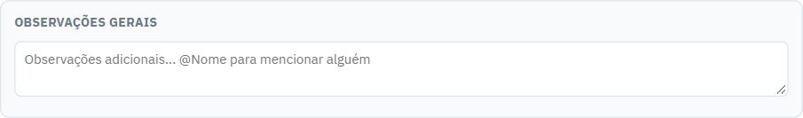
Observações gerais - Dados do cliente. Digite o Nome do cliente* e escolha na lista (a lupa): o sistema preenche empresa/órgão, CPF/CNPJ, endereço, telefone e e-mail do cadastro de clientes. Cliente novo? Digite tudo; ele fica guardado para a próxima vez.
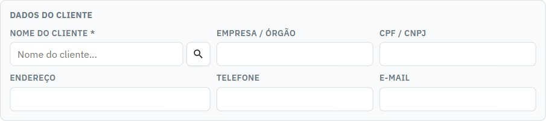
Bloco Dados do cliente - Prazos. O Prazo para orçamento é opcional e aparece no cartão e na lista. Na garantia, no lugar dele aparece a Data prevista de entrega.
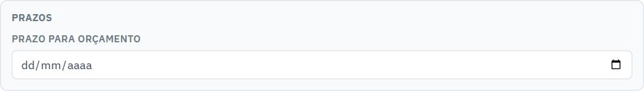
Bloco Prazos - Checklist de acessórios. Digite cada acessório que veio junto (carregador, cabo, manual) e clique + Add (ou tecle Enter). Cada acessório entra com a caixa marcada (veio junto); desmarque se ele não veio. O × tira o acessório da lista (o sistema pede confirmação).
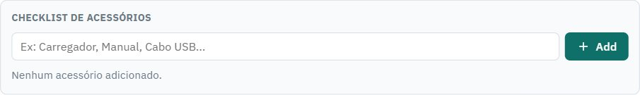
Checklist de acessórios - Fotos e arquivos de entrada. Fotos do equipamento como chegou e documentos (PDF, Word). Se algum arquivo não subir, a OS não abre e o sistema diz qual arquivo falhou: corrija ou tire o arquivo da lista.
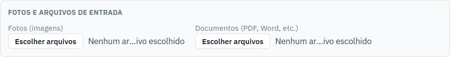
Fotos e arquivos de entrada - Dados de faturamento (opcional): CNPJ/CPF, razão social e endereço da nota, quando diferentes do cliente. Este bloco some na OS de garantia sem cobrança, porque ela não tem nota.
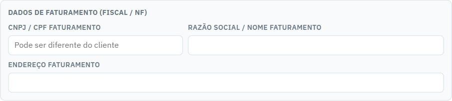
Dados de faturamento - Valores financeiros (comissões) (opcional): Valor total e Mão de obra. É o que a comissão lê; pode ficar vazio e ser preenchido depois pelo menu ⋯ Financeiro.
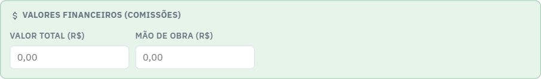
Valores financeiros - Vínculo comercial/CRM (opcional): digite pelo menos 2 letras do título ou do órgão e escolha a oportunidade do CRM. É só um vínculo: a OS fica ligada à oportunidade, sem copiar nada. Remover desfaz.
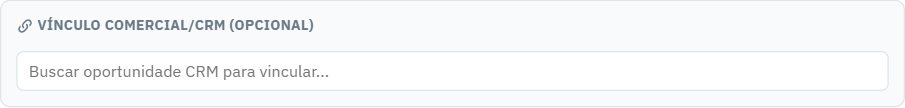
Vínculo com o CRM - Clique ABRIR OS (no rodapé). Cancelar fecha a janela sem gravar nada.
Na janela, uma faixa avisa para onde a OS vai: na OS do Laboratório, "será encaminhada automaticamente para o Laboratório para diagnóstico e elaboração do orçamento"; na garantia do Laboratório, "é aprovada automaticamente: o Laboratório receberá a OS para execução direta".
Vários equipamentos de uma vez (lote)
Aumente a Qtd. A janela mostra um bloco por equipamento (Equipamento 1 de 3, 2 de 3...). Marque a caixa "Criar uma OS para cada equipamento (lote)": o sistema cria uma OS para cada um, cada uma com o seu número, e o quadro mostra o lote num cartão só.
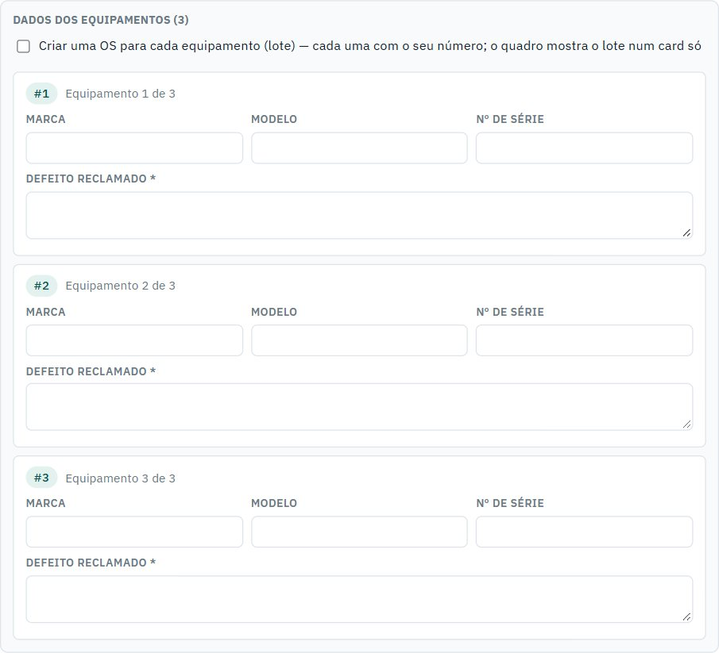
Despesas de campo
Se a Categoria for do tipo que tem despesas (por exemplo, Serviço Externo), aparece o bloco Despesas de campo: Deslocamento, Hospedagem e Alimentação, com o total somado.
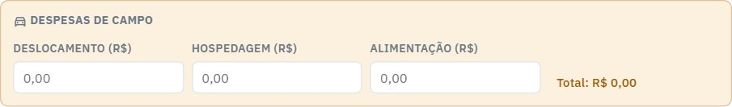
O que acontece quando você clica em Abrir OS
- O sistema dá o número da OS (formato OS-0123/2026, uma sequência por ano). Se dois atendentes abrem ao mesmo tempo e o número repete, ele pega o próximo sozinho.
- A OS nasce na etapa de início do caminho dela:
| O que você abriu | Nasce em | Quem age em seguida |
|---|---|---|
| Laboratório, cobrada | Diagnóstico | Laboratório (recebe a demanda "[SAC-DIAG]") |
| Laboratório, garantia (sem cobrança) | Aprovado | Laboratório (recebe a demanda de execução, "[SAC-EXEC]") |
| Veículo, avaliação Remota | Em Cotação | SAC monta os itens |
| Veículo, avaliação Presencial | Em Provisionamento | Produção marca a data |
| Veículo, garantia (sem cobrança) | Em Provisionamento | Produção marca a data |
- Se marcou Acompanhamento de Engenharia, nasce também uma demanda para a Engenharia.
- As menções (@Nome) viram avisos na caixa de Menções de quem foi chamado.
- O sistema avisa por WhatsApp (se esse aviso estiver ligado na configuração): "Nova OS ..., cliente, equipamento, tipo, aberta por". No lote vai um aviso só, com todos os números.
- Se a OS foi criada mas uma demanda (Laboratório ou Engenharia) não nasceu, o sistema diz qual faltou: avise o PCP ou a TI, porque o setor só enxerga a OS pela demanda.
- O cliente digitado fica salvo no cadastro de clientes.
OS de veículo
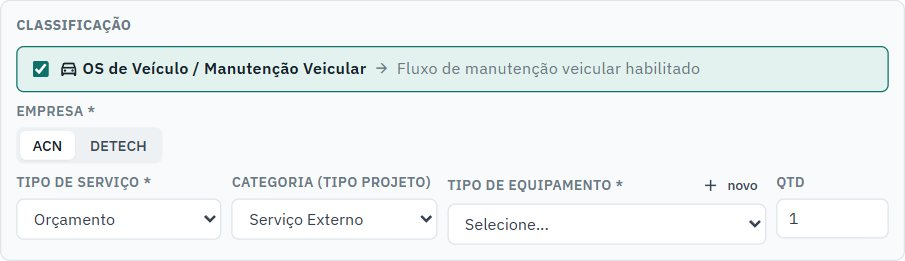
Marque OS de Veículo / Manutenção Veicular e escolha o Tipo de avaliação:
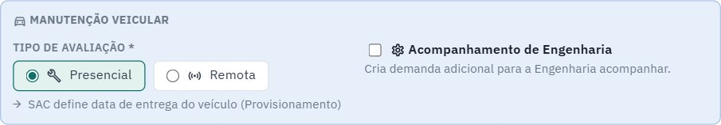
Na garantia sem cobrança o bloco não deixa escolher: diz que "Garantia sem cobrança não tem cotação: a Produção marca a data de atendimento do veículo" e a OS entra como presencial.
| Tipo de avaliação | Como funciona | Quando escolher |
|---|---|---|
| Remota | O preço sai antes de o veículo chegar. Você monta a cotação (itens e valores) e o cliente aprova. Depois a Produção marca a data | O defeito já é conhecido e dá para orçar sem ver o carro |
| Presencial | O veículo vem primeiro: a Produção marca a data, o veículo chega, a Produção examina e insere os materiais do orçamento. Aí o cliente aprova | O defeito só se descobre com o veículo na oficina |
Acompanhamento de Engenharia (caixa à direita): marque quando a Engenharia precisa acompanhar o serviço. Cria uma demanda a mais para ela.
OS de garantia: começa pela ficha
Ao escolher Tipo de serviço = Garantia, aparece o quadro Atendimento de garantia (ficha). A OS só abre com a ficha escolhida.
- Escolha a ficha na lista (só aparecem as fichas liberadas para gerar OS: com a avaliação técnica registrada). Cliente, contato, veículo, chassi e falha vêm preenchidos.
- Em Esta OS será, escolha:
- Sem cobrança (garantia ou cortesia): não passa por cotação nem aprovação e não vai ao Fiscal; termina em Entregue. É a sugestão quando a ficha diz que está dentro da garantia.
- Cobrada do cliente: fora da cobertura; segue o fluxo pago (cotação ou orçamento, aprovação, execução e Fiscal). É a sugestão quando a ficha diz que está fora da garantia.
- Termine como qualquer OS e clique Abrir OS.
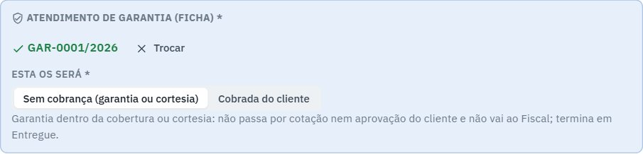
O que acontece depois: a ficha da garantia registra no histórico que a OS nasceu ("Ordem de serviço gerada: OS-0130/2026 (sem cobrança)") e avisa o responsável e os copiados da ficha.
Passo a passo: o que fazer em cada etapa
Em cada OS, o botão verde é o passo que você precisa dar naquela etapa. Abaixo, cada passo, o que ele pede e para onde a OS vai.
Enviar o orçamento ao cliente (Laboratório)
Quando usar: a OS está em Orçamento Pronto. O Laboratório diagnosticou e informou o valor na demanda dele.
Passo a passo:
- No cartão da OS, clique Enviar (botão verde).
- Confira o Diagnóstico do Lab (o texto do Laboratório aparece em azul, como apoio).
- Confira ou digite o Valor do orçamento (R$)*.
- Se quiser, escreva as Condições de pagamento (por exemplo, "50% entrada + 50% na retirada").
- Clique Enviar ao cliente.
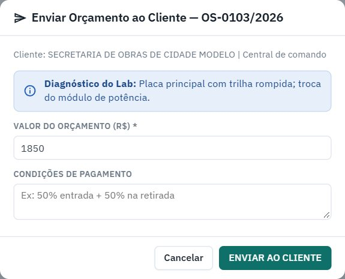
O que acontece: a OS grava o valor, as condições e a data de envio; o sistema avisa por WhatsApp (se ligado). O sistema não manda o orçamento ao cliente por e-mail ou WhatsApp: o SAC envia o orçamento ao cliente pelo meio de costume e usa este botão para registrar que enviou.
Vai para: Orç. Enviado. Quem age: o cliente (você cobra a resposta).
Registrar a resposta do cliente: aprovar ou reprovar (Laboratório)
Quando usar: a OS está em Orç. Enviado e o cliente respondeu.
Se o cliente APROVOU:
- Clique Aprovar no cartão.
- Digite o Nome do aprovador*.
- (Opcional) informe a Data prevista de entrega.
- Peça a assinatura do aprovador* e desenhe no quadro (com o dedo ou o mouse). Clique Confirmar assinatura. Limpar apaga e recomeça.
- Clique Confirmar aprovação.
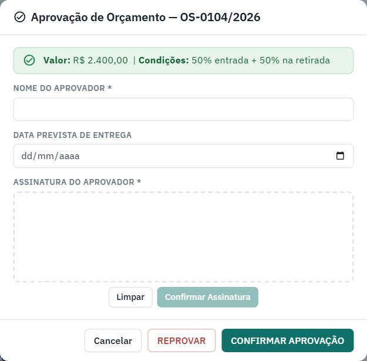
O que acontece: a assinatura é guardada na OS; a OS fica Aprovada (com aprovador e data); nasce a demanda de execução para o Laboratório ("Cliente aprovou orçamento R$ ... Aprovador: ... Data prevista: ..."); o sistema avisa por WhatsApp. Se a demanda não nascer, o sistema diz: avise o PCP ou a TI.
Vai para: Aprovado e depois Em Execução (o Laboratório inicia a demanda dele).
Se o cliente REPROVOU:
- Clique Reprovar (botão vermelho vazado).
- Escreva o Motivo da reprovação*.
- (Opcional) Data de retirada do equipamento e Nome de quem retirou.
- Clique Confirmar reprovação.
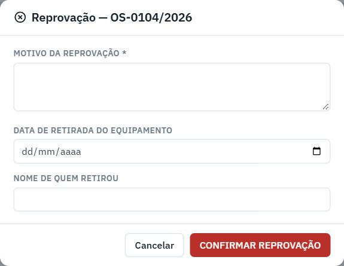
O que acontece: a OS fica Reprovada (motivo e dados da retirada guardados). A OS reprovada sai do quadro e fica só na lista (filtro de status "Reprovado"). Uma faixa acima do quadro avisa quantas estão fora.
Vai para: Reprovado. Para reabrir, use Reavaliar (veja abaixo).
Montar e enviar a cotação (veículo, avaliação remota)
Quando usar: a OS de veículo está em Em Cotação. Quem age é o SAC.
Passo a passo:
- Clique Itens no cartão. Abre a janela Itens da cotação.
- Para cada item, preencha Código, Descrição, Qtd e Vl. unit. (R$). O Total soma sozinho. + Adicionar linha acrescenta; o × tira a linha.
- (Opcional) em Horas cobradas na cotação (h) coloque as horas de mão de obra que você cobrou. Depois, o sistema compara com as horas reais que a Produção apontar (é o KPI que aparece na lista).
- Clique Salvar itens.
- De volta ao cartão, clique Enviar Cotação (botão verde).
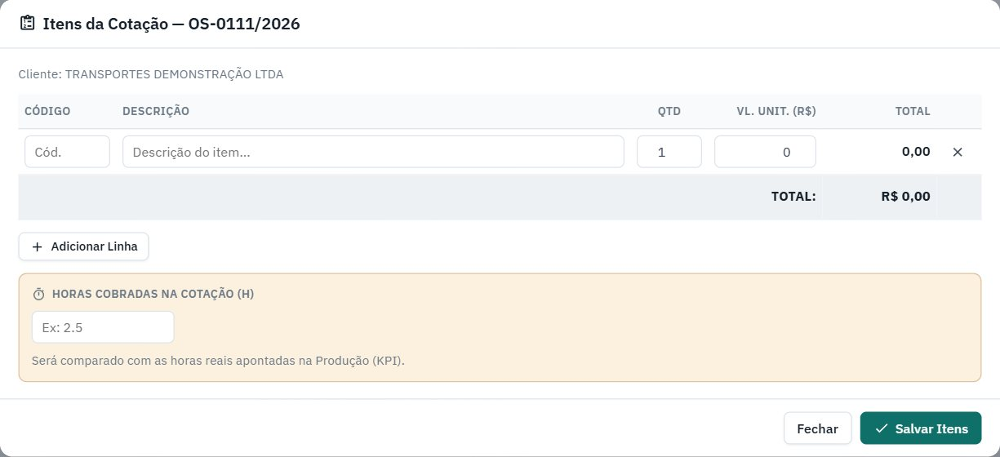
O que acontece: o valor da cotação é a soma dos itens; grava a data de envio; avisa por WhatsApp. Como no orçamento do Laboratório, o sistema registra, não envia ao cliente.
Vai para: Aguardando Aprovação Cliente.
Registrar a resposta do cliente à cotação:
- Aprovado: o sistema pede o Nome de quem aprovou*. Clique Confirmar aprovação. A OS vai para Em Provisionamento e o WhatsApp avisa a Produção: "definir data de atendimento".
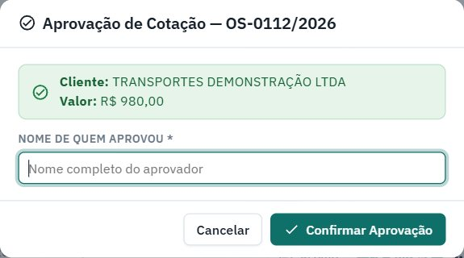
Janela Aprovação de cotação - Recusado: o sistema pergunta o Motivo da recusa (opcional). A OS vai para Reprovado.
Orçamento da OS de veículo presencial
Quando usar: a OS está em Aguardando Aprovação Cliente e o veículo já passou pela verificação: o orçamento veio da Produção, com os materiais que ela inseriu.
Passo a passo:
- Ver Orç. abre o orçamento só para leitura. Editar deixa trocar itens e valores. Ao salvar, o total é recalculado e uma eventual revisão pendente é resolvida.
- Quando o cliente decidir, clique Aprovado (o sistema pede confirmação) ou Recusado.
O que acontece: Aprovado grava a aprovação e leva a OS para Aguardando Início: a Produção atribui o técnico e inicia. Recusado leva a OS para Reprovado.
Aceite da data (veículo)
Quando usar: a OS está em Aguardando Aceite SAC. A Produção marcou a data e o período do atendimento e devolveu ao SAC para confirmar com o cliente.
Passo a passo:
- Clique Aceite SAC.
- A janela mostra "Data definida pela Produção" (dia da semana, data e período: Manhã, Tarde...).
- Ligue ou escreva ao cliente e confira se ele aceita.
- Clique Cliente confirmou (se aceitou) ou Não confirmou (se não aceitou).
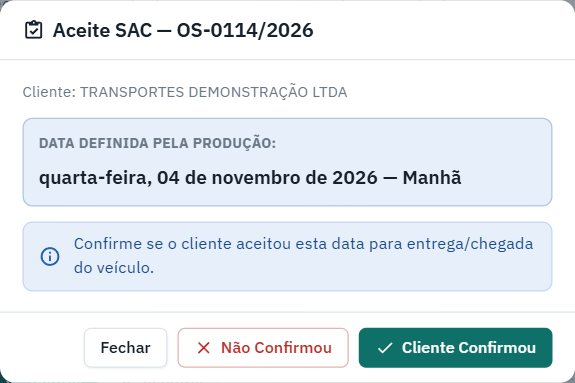
O que acontece:
- Cliente confirmou: a OS vai para Aguardando Início (avaliação remota) ou Provisionada (presencial). O WhatsApp avisa "SAC confirmou data".
- Não confirmou: o sistema pergunta se tem certeza ("o cliente não aceitou a data e a OS voltará para a Produção redefinir"). Ao confirmar, a OS volta para Em Provisionamento, a data é apagada e a Produção marca outra.
Iniciar e concluir a execução (quando o SAC executa)
Quando usar: a OS já está Aprovada e quem executa é o próprio SAC, ou o Laboratório não registrou o início.
Iniciar a execução (menu ⋯ Mover para Em Execução):
- Informe Quem vai executar* e a Data de início*.
- Clique Confirmar. A OS passa a Em Execução.
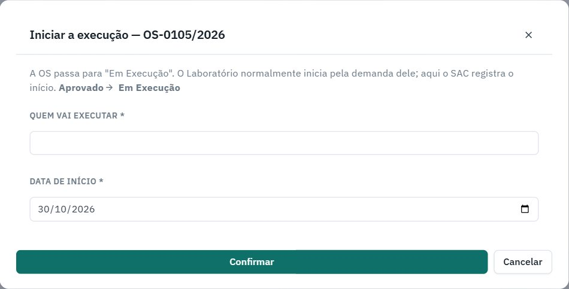
Concluir a OS: na OS lançada pelo card do CRM com "O SAC conclui", o botão verde é Concluir OS. O sistema pergunta se o serviço foi executado; ao confirmar, a OS vai para Concluído. Se outra pessoa já tinha concluído, o sistema avisa e atualiza a lista.
Enviar ao Fiscal (OS do Laboratório, cobrada)
Quando usar: a OS está Concluído e é cobrada. O Fiscal precisa do valor e dos dados da nota.
Passo a passo:
- Clique Enviar ao Fiscal (botão verde).
- Confira o Valor total da OS (R$)*: vem do orçamento aprovado quando existe. É o valor da nota. Tem de ser maior que zero.
- Digite o CPF ou CNPJ para a nota* (11 dígitos para CPF, 14 para CNPJ). Pode ser o do cliente ou de outro, se a nota sai em outro nome.
- (Opcional) Razão social ou nome na nota e Endereço de faturamento.
- Clique Enviar ao Fiscal.
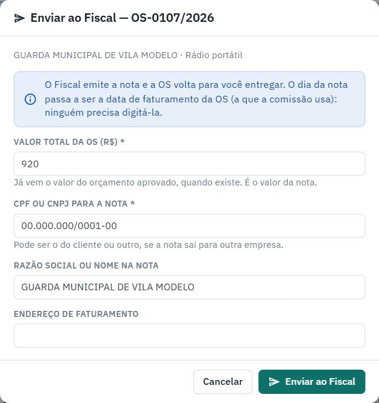
O que acontece: a OS vai a Aguardando Emissão NF e o Fiscal passa a vê-la na tela dele. A data da nota que o Fiscal emitir vira a data de faturamento da OS (a que a comissão lê): ninguém precisa digitá-la. O tempo do Fiscal passa a contar da data do envio.
Vai para: Aguardando Emissão NF (quem age: o Fiscal) e, depois da nota, Faturada - Aguardando Entrega (quem age: o SAC).
Enviar ao Fiscal (OS de veículo, cobrada)
Quando usar: a Qualidade aprovou o serviço e a OS está em Aguardando Envio Fiscal. O Fiscal precisa do número de série de cada item instalado para emitir a nota.
Passo a passo:
- Clique Enviar para Fiscal (botão verde).
- A janela lista os itens instalados (descrição e quantidade). Digite o Nº de série de cada item.
- Clique Enviar para Fiscal.
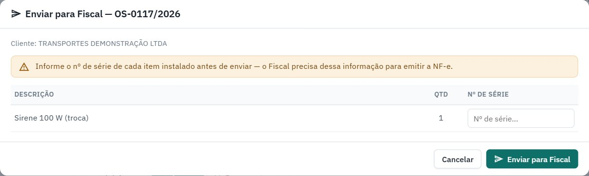
O que acontece: os itens com os seriais ficam gravados na OS; a OS vai a Aguardando Emissão NF; grava o dia do envio; avisa por WhatsApp. Se outra pessoa já enviou, o sistema avisa e atualiza.
Entregar ao cliente
Quando usar: a OS está Faturada - Aguardando Entrega, ou Concluído e sem cobrança.
Entrega de OS do Laboratório:
- Clique Entrega.
- Digite o Nome de quem retirou*.
- (Opcional) Fotos de saída: escolha as imagens do equipamento entregue.
- Peça a assinatura de retirada* e desenhe no quadro; clique Confirmar assinatura.
- Clique Confirmar entrega.
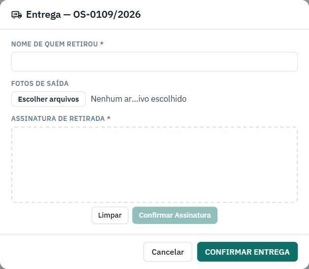
Entrega do veículo: a janela é mais simples e pede só o nome de quem recebeu o veículo*. Não pede assinatura nem fotos.
O que acontece: a OS vai a Entregue (o fim do caminho), com a data, o nome e, no Laboratório, a assinatura e as fotos. Avisa por WhatsApp ("OS entregue"). A OS entregue continua na lista e no quadro, em Concluído.
Entregar sem nota (cortesia)
Quando usar: a OS está cobrada e Concluído, mas por decisão do atendimento não será faturada.
Passo a passo:
- Menu ⋯ > Entregar sem nota (cortesia).
- Escreva o motivo (obrigatório). Clique Confirmar.
- Abre a janela de Entrega (a do Laboratório).
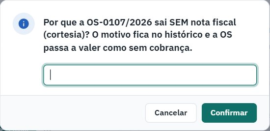
O que acontece: a OS passa a valer como sem cobrança, o motivo fica no histórico e a OS segue direto para a entrega, sem passar pelo Fiscal.
Menu ⋯ (Mais ações da OS)
O menu de três pontinhos tem o que toda OS pode fazer. Alguns itens só aparecem quando fazem sentido.
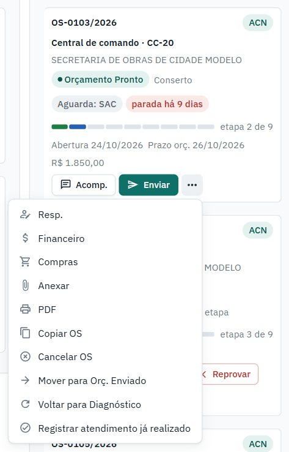
| Item | O que faz | Quando aparece |
|---|---|---|
| Resp. | Troca o responsável da OS (escolha o novo na lista e Salvar) | Enquanto a OS não está Entregue nem Cancelada |
| Financeiro | Valor total e Mão de obra (a comissão lê). Mostra a data de faturamento, que vem da nota do Fiscal e não se digita | Sempre |
| Compras | Lista as compras ligadas à OS e permite Solicitar compra ao Compras (fica ligada à OS) | Sempre |
| Anexar | Envia arquivos (imagens, PDFs, Word, Excel) para a OS | Sempre |
| Gera a OS em PDF, A4, com campo de assinatura do cliente no pé | Sempre | |
| Entregar sem nota (cortesia) | Veja acima | OS cobrada e Concluído |
| Copiar OS | Abre a Nova OS preenchida para criar OS iguais | Sempre |
| Cancelar OS | Cancela a OS, com motivo | Antes do Fiscal e se não estiver entregue |
| Mover para ... e Voltar para ... | Os passos que o SAC pode dar agora | Conforme a etapa (veja Mover a OS) |
| Registrar atendimento já realizado | Para o serviço feito fora da fábrica | Antes da execução (veja abaixo) |
| Desfazer o registro do atendimento | Desfaz o registro acima | OS concluída por esse registro |
Responsável, Financeiro, Anexar, Compras
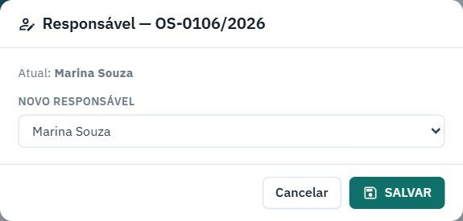
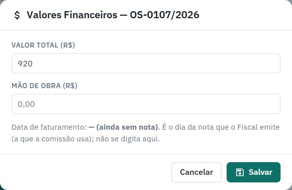
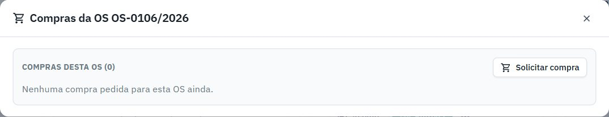
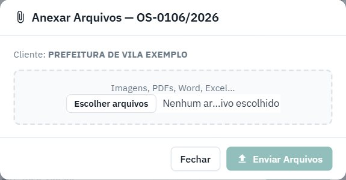
- Resp.: o novo responsável fica gravado no histórico de alterações.
- Financeiro: só um campo em branco vira vazio; um valor 0 que já estava gravado continua 0. Valor e mão de obra mudados ficam no histórico, com o valor de antes.
- Compras: mostra "Compras desta OS (N)" com o andamento de cada uma. Solicitar compra abre a solicitação ligada à OS; no Compras ela aparece com o selo "Demanda de OS (SAC)".
- Anexar: escolha os arquivos e clique Enviar arquivos. Se algum não subir, nenhum é anexado e a escolha fica para você tentar de novo.
Acompanhamento
O botão Acomp. (sempre à vista no cartão) abre a janela Acompanhamentos da OS: o caderno do atendimento. Escreva o andamento, uma decisão ou uma pendência no campo Novo acompanhamento (use @Nome para avisar alguém) e clique Registrar. Cada registro mostra quem escreveu e quando.
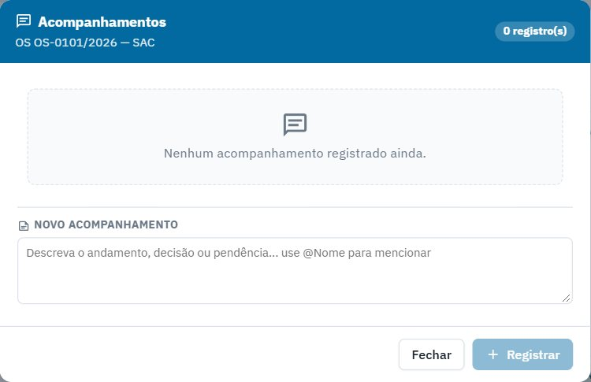
PDF da OS
O botão PDF do menu ⋯ gera a ordem de serviço para imprimir, em uma folha A4. No pé vão ASSINATURA, NOME COMPLETO e DOCUMENTO, linhas para o cliente preencher à mão. Numa OS curta sobra um espaço em branco entre o conteúdo e a assinatura, de propósito.
Mover a OS entre as etapas
Quando usar: a OS precisa avançar ou voltar, e o botão verde do cartão não resolve (por exemplo, o Laboratório esqueceu de iniciar a demanda), ou você quer voltar uma etapa porque registrou algo errado.
Duas maneiras:
- Arrastar o cartão para outra coluna do quadro (no computador).
- Menu ⋯ > Mover para ... / Voltar para ... (serve também no celular e no tablet, onde arrastar não funciona).
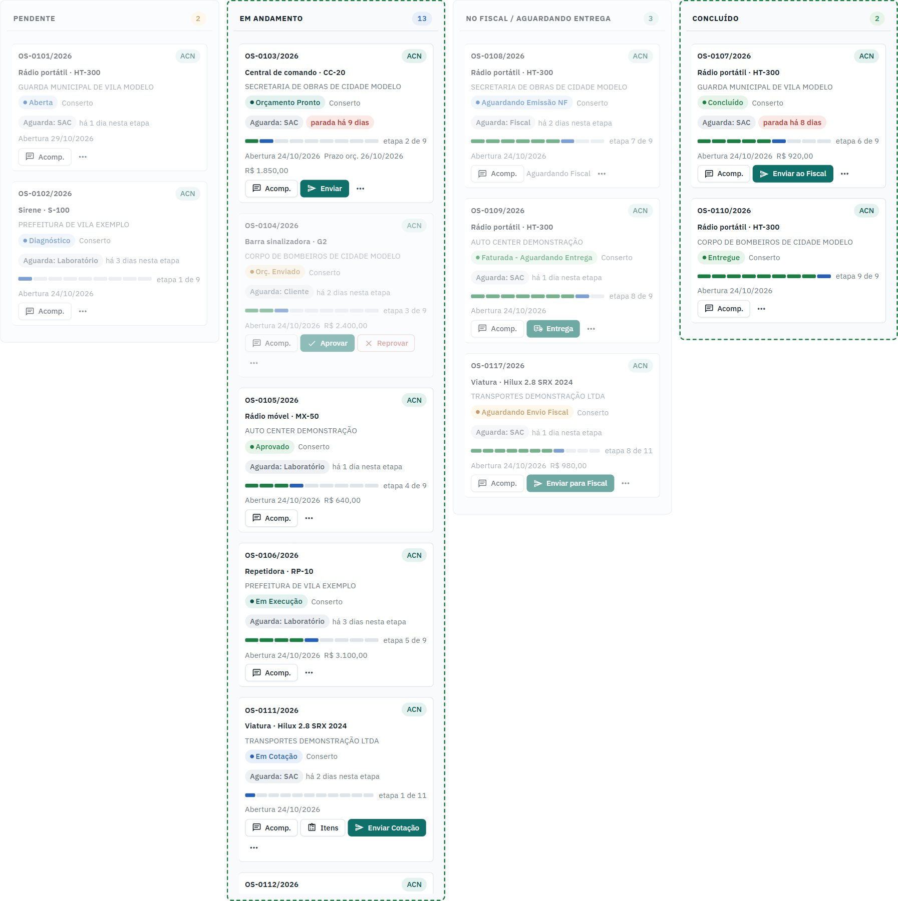
As regras:
- O SAC avança onde é ele quem age e volta uma etapa, sempre com motivo.
- As etapas da Produção, da Qualidade (CQ) e do Fiscal não se movem por aqui: nenhum passo entra nelas nem sai delas. É para não pular o CQ nem o Fiscal.
- Se você soltar o cartão na mesma coluna, não acontece nada.
- Se soltar numa coluna onde a OS não pode ir, a tela diz por quê. Se a coluna tem mais de um passo possível, abre uma janela para você escolher.
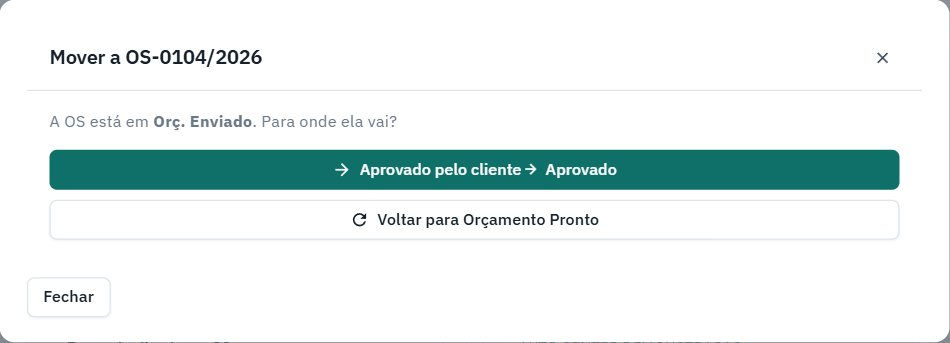
Os passos, por etapa (o que o SAC pode fazer):
| Etapa da OS | Passos do SAC |
|---|---|
| Aberta | Abrir o diagnóstico (cria a demanda do Laboratório) · Seguir como vendida (vai para a execução, sem cotação) |
| Diagnóstico | Informar o orçamento (valor e condições; normalmente o Laboratório faz isso na demanda dele) |
| Orçamento Pronto | Enviar o orçamento · Voltar para Diagnóstico |
| Orç. Enviado | Aprovado pelo cliente · Reprovado pelo cliente · Voltar para Orçamento Pronto |
| Aprovado | Iniciar a execução · Voltar para Orç. Enviado (só se a OS passou pelo orçamento) |
| Em Execução (Laboratório) | Concluir a execução / Concluir a OS · Voltar para Aprovado |
| Concluído | Enviar ao Fiscal (cobrada) ou Entregar (sem cobrança) · Voltar para Em Execução |
| Em Cotação (veículo) | Enviar a cotação · Seguir sem cotação (se for sem cobrança) |
| Aguardando Aprovação Cliente | Cotação aprovada / Orçamento aprovado · Cotação recusada · Voltar para Em Cotação (remota) |
| Aguardando Aceite SAC | Dar o aceite da data |
| Aguardando Envio Fiscal | Enviar ao Fiscal (com os seriais) |
| Faturada - Aguardando Entrega | Entregar ao cliente |
| Reprovado | Reavaliar |
| Em Provisionamento, Provisionada, Verificação e Orçamento, Aguardando Início, Aguardando CQ, Aguardando Emissão NF | Nenhum (a OS está com a Produção, a Qualidade ou o Fiscal) |
Em quase toda etapa, antes do Fiscal, também há Cancelar a OS e, antes da execução, Registrar atendimento já realizado.
O que acontece ao mover:
- Os passos que já tinham janela (enviar orçamento, aprovar, reprovar, Fiscal, entrega, cotação, aceite, cancelar) abrem a janela de sempre.
- Os outros (informar o orçamento, iniciar a execução, concluir, voltar, abrir o diagnóstico, seguir como vendida) pedem os dados na janela "Mover a OS" e não gravam enquanto faltar algo.
- A gravação confere a etapa de antes: se outra pessoa mexeu na OS, o sistema avisa, atualiza a lista e não grava.
- Voltar para antes da aprovação limpa a marca de "aprovada".
- A demanda aberta de outro setor recebe um recado no histórico dela; quem encerra é o setor.
Registrar atendimento já realizado
Quando usar: o serviço já foi feito fora da fábrica (no local do cliente, numa oficina parceira, por um técnico em visita) e a OS ficou parada numa etapa de antes da execução. É o caso das OS da Defesa Civil de Taió que estavam em Em Cotação com o atendimento já finalizado.
Quem faz: o SAC.
Quando NÃO dá para usar (o sistema diz o motivo):
- a OS já está Em Execução, em Aguardando CQ ou além: a fábrica já está com ela ou já a executou;
- a OS é de veículo e o veículo já chegou à fábrica (a data de chegada está marcada): o atendimento é da Produção;
- a OS está encerrada (Entregue ou Cancelada) ou Reprovada (primeiro Reavaliar, depois registre).
Passo a passo (uma OS):
- No cartão da OS, menu ⋯ > Registrar atendimento já realizado.
- A janela mostra a OS que será registrada.
- Preencha os três campos, todos obrigatórios:
- Data do atendimento*: o dia em que o serviço foi feito (não pode ser futura);
- Quem fez o atendimento*: o nome do técnico ou da empresa;
- O que foi feito*: descreva o serviço, o local e o que ficou combinado.
- Clique Registrar atendimento.
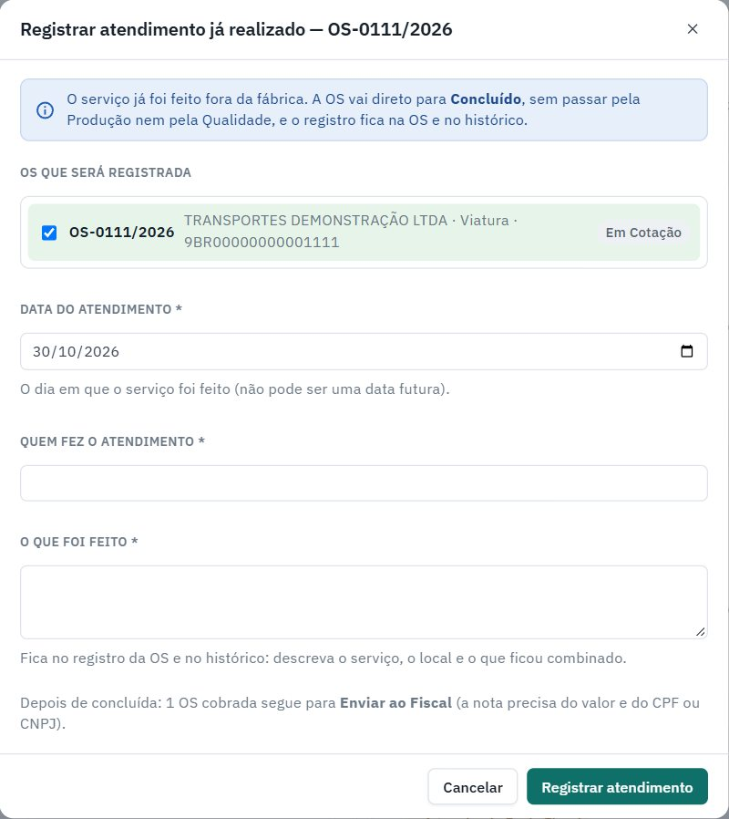
Passo a passo (várias OS do mesmo lote, de uma vez):
- No cartão do lote, clique Registrar atendimento já realizado.
- A janela lista todas as OS do lote que ainda podem ser registradas, já marcadas. Desmarque as que não entram (Desmarcar todas limpa a lista).
- Preencha os três campos (valem para todas).
- Clique Registrar N OS.
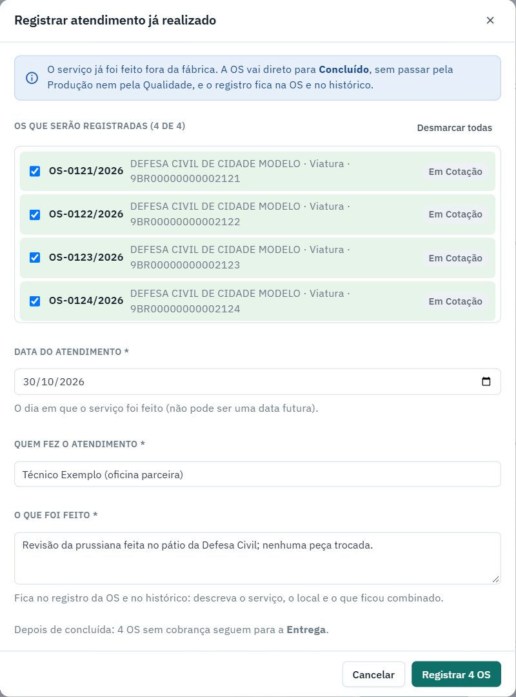
O que acontece:
- A OS vai direto para Concluído, sem passar pela Produção nem pela Qualidade.
- O registro fica na OS (o resumo mostra "Feito em", "Quem fez", "O que foi feito", "Registrado por" e "Etapa antes do registro") e no histórico.
- Se havia demanda aberta do Laboratório ou da Engenharia, ela recebe um recado ("o SAC registrou o atendimento como já realizado... Encerre esta demanda") e o setor encerra.
- Não entra na comissão da Produção nem no KPI de execução: serviço feito por fora não é produção da fábrica.
Vai para: Concluído, e daí:
- OS cobrada: Enviar ao Fiscal (precisa de valor e CPF/CNPJ);
- OS sem cobrança (garantia, cortesia): Entrega.
Cancelar uma OS
Quando usar: o cliente desistiu, a OS foi aberta em duplicidade ou por engano.
Quem faz: quem tem a aba SAC.
Passo a passo:
- Menu ⋯ > Cancelar OS.
- Escreva o motivo (obrigatório).
- O sistema mostra o resumo e, se houver demandas abertas de outros setores, avisa quais.
- Confirme.
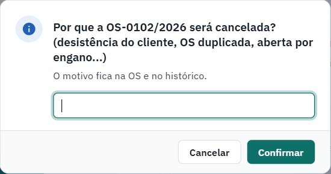
O que acontece:
- A OS fica Cancelada, com motivo, data e quem cancelou.
- A OS sai do quadro e da lista (fica só no filtro de status Cancelada; uma faixa acima do quadro conta quantas estão fora).
- As demandas abertas dos outros setores recebem um recado e o setor é avisado: quem encerra a demanda é o setor.
- Avisa por WhatsApp, dizendo quais setores devem encerrar a demanda.
Reavaliar uma OS reprovada
Na lista (filtro de status Reprovado), a OS reprovada tem o botão Reavaliar. O sistema pergunta "Reabrir a OS...?". Ao confirmar:
- OS do Laboratório: volta para Diagnóstico;
- OS de veículo, avaliação remota: volta para Em Cotação;
- OS de veículo, avaliação presencial: volta para Em Provisionamento.
A marca de aprovada e o motivo da reprovação são limpos.
Lotes de OS
Quando você abre várias OS de uma vez (caixa de lote na Nova OS), o quadro mostra um cartão de lote.
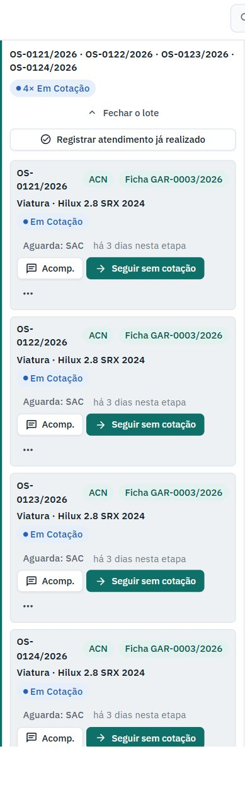
- O cartão mostra "Lote · N OS", o cliente, os números das OS e quantas estão em cada etapa (por exemplo, "4× Em Cotação").
- Abrir o lote mostra cada OS, com o selo da etapa, quem age, a barra de progresso e os mesmos botões da OS solta.
- Registrar atendimento já realizado no cartão do lote registra várias de uma vez.
- Para as outras passagens (aprovar, enviar ao Fiscal, entregar), é preciso abrir o lote e fazer OS por OS.
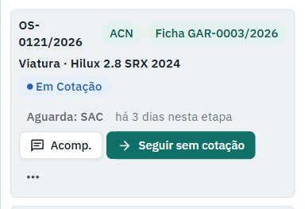
Copiar OS
Quando usar: vão chegar vários equipamentos iguais do mesmo cliente, ou você quer repetir uma OS que já fez.
Passo a passo:
- Menu ⋯ > Copiar OS.
- O sistema pergunta quantas OS iguais (de 1 a 20). Ele lista o que leva e o que não leva.
- A Nova OS abre preenchida: uma OS para cada equipamento, cada uma com o seu número.
- Confira, preencha o serial (ou chassi) de cada um e clique Abrir OS.
Leva: cliente, empresa, tipo de serviço, equipamento ou veículo (marca, modelo), defeito reclamado e observações; prazos, valores, itens da cotação, despesas, dados de faturamento, acompanhamento de engenharia e vínculo com o CRM.
Não leva: número de série, chassi, acessórios que vieram junto, fotos e documentos anexados, e todo o andamento (etapa, orçamento, aprovação, execução, nota e histórico).
O painel de leitura da OS (resumo)
Clique no cartão (ou na linha) para abrir o resumo da OS. Ele mostra, de cima para baixo: Andamento (as etapas do caminho, com a atual destacada); Serviço (tipo, atendimento, defeito, quem abriu); Veículo ou Equipamento; Cliente; Andamento (datas); Valores; Itens da cotação; Compras desta OS (com Solicitar compra); Responsáveis; e, quando existem, Atendimento já realizado, observações, arquivos e fotos.
Parte 3Aba Chamados NFC
Para que serve
O cliente tem, no veículo, uma etiqueta NFC (ou um link/QR). Ao encostar o celular, abre a página do veículo e pode abrir um chamado: o botão "Abrir Chamado de Garantia". Ele informa o nome, o telefone e descreve o defeito. O chamado cai nesta aba, para o SAC atender.
O chamado não é uma OS. É um pedido de ajuda. Quando o atendimento mostra que há serviço a fazer, o SAC abre a OS (ou a ficha de garantia) à mão.
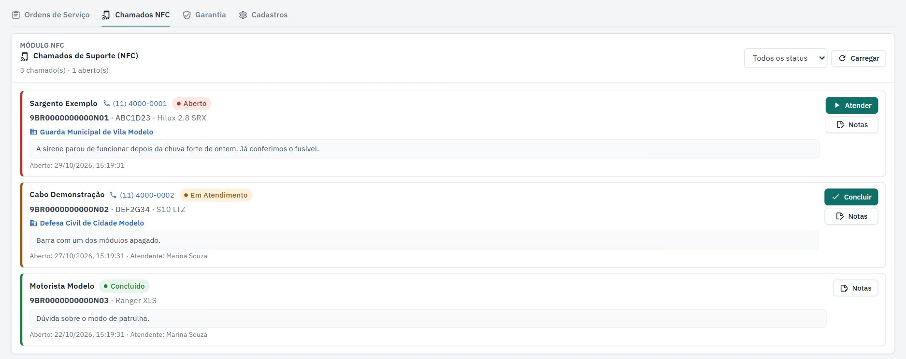
A tela
- Módulo NFC · Chamados de Suporte (NFC): o título mostra "N chamado(s) · N aberto(s)". O número de abertos é o total real de chamados abertos, mesmo quando o filtro mostra outra coisa.
- Filtro de status: Todos os status, Aberto, Em Atendimento, Concluído, Cancelado. Ao escolher, a lista já recarrega.
- Carregar: lê a lista de novo (serve para ver chamados que chegaram agora; a aba não atualiza sozinha).
Cada chamado é um cartão com:
| O que aparece | O que é |
|---|---|
| Nome e telefone (com link: no celular, toca para ligar) | Quem abriu o chamado. "Anônimo" se não informou o nome |
| Selo de status | Aberto (vermelho), Em Atendimento (âmbar), Concluído (verde), Cancelado (cinza) |
| Chassi · placa · modelo | O veículo do chamado |
| Órgão / cliente | De quem é o veículo |
| Descrição do defeito | O que o cliente escreveu (os primeiros 180 caracteres) |
| Aberto: data e hora · Atendente: nome | Quando chegou e quem atende |
A borda do cartão tem a cor do status: vermelha para o que ainda está Aberto.
Passo a passo: atender um chamado
Quando usar: um chamado novo (Aberto) apareceu.
Quem faz: o SAC.
- Abra a aba Chamados NFC. Confira o chamado e o telefone.
- Clique Atender. O chamado passa a Em Atendimento e você fica como atendente.
- Ligue ao cliente (clique no telefone), entenda o defeito e resolva.
- Clique Notas para registrar o que foi feito (veja abaixo).
- Terminou? Clique Concluir. O chamado passa a Concluído e você consta como quem concluiu.
O que acontece: o status e o nome do atendente ficam gravados. A cada Atender ou Concluir o atendente é o último que clicou.
Notas de atendimento
O botão Notas abre a janela do chamado, com o resumo (quem abriu, telefone, órgão e a descrição do defeito) e o campo Notas de atendimento: escreva as ações tomadas ("liguei, o cliente trocou o fusível, orientei a testar"). Clique Salvar notas. Fechar sai sem salvar.
O que o chamado vira depois
- O chamado se resolveu por telefone (orientação): Concluir.
- Precisa de serviço: abra uma OS (aba Ordens de Serviço > Nova OS) ou, se for caso de garantia, uma ficha (aba Garantia). Anote nas Notas o número da OS ou da ficha para o chamado não ficar solto. O chamado não abre a OS sozinho.
- Não houve atendimento possível (engano, duplicado): o status Cancelado existe no filtro, mas esta tela não tem botão para cancelar. Conclua e registre o motivo nas Notas.
Parte 4Aba Garantia
Para que serve
A ficha de garantia é o prontuário de um atendimento em garantia: do relato do cliente até o fim, guarda tudo num lugar só: a avaliação técnica, a consulta ao fornecedor, os custos, a conversa com o cliente, a autorização da direção, as peças que vão e voltam, o diário técnico e a OS de execução.
Quem faz o quê
| Quem | O que pode |
|---|---|
| Abrir a ficha | Admin, qualquer gerente, o Comercial, o SAC e quem tem a aba SAC liberada |
| Ver a ficha | Quem abriu, o responsável, os copiados e o Admin |
| Editar, cancelar e reabrir | Quem abriu, o responsável e a gerência |
| Conduzir (avaliação, fornecedor, custos, alinhamento, pedir autorização, quem executa, peças, apontamentos, encerrar) | O responsável pelo atendimento e a gerência |
| Decidir a autorização | Só a direção (perfil Admin) |
| Ver o relatório semanal | A gerência e o Admin |
A lista
- Atendimentos em garantia (N): o título.
- Abertos / Encerrados / Cancelados / Todos: os filtros, com a contagem de cada um. O padrão é Abertos.
- Busca: por número, cliente, placa, OP...
- Colunas: Número (GAR-0001/2026), Cliente, Veículo, Placa/Chassi, Origem, Falha, Ocorrência, Responsável, Etapa e Situação.
- Selo "Parado há N d" (âmbar): o atendimento aberto e sem nenhum movimento na ficha há 5 dias ou mais. É o alerta para não deixar o cliente esperando.
- Clique numa linha para abrir a ficha.
Abrir um atendimento (nova ficha)
Quando usar: o cliente relatou uma falha num produto vendido (ainda em garantia ou não: a ficha é aberta de qualquer jeito; quem diz se está na garantia é a avaliação técnica).
Passo a passo:
- Aba Garantia > Novo atendimento.
- Preencha (tudo com * é obrigatório):
- Cliente* e Contato do cliente (telefone ou e-mail)*;
- Veículo (catálogo)*: procure por marca, modelo ou ano. Se não existir, + Novo cadastra;
- Placa ou Chassi: ao menos um dos dois. A placa é conferida (formato ABC1234 ou ABC1D23); o chassi tem 17 letras e números, sem I, O e Q. O sistema tira espaços e traços e deixa em maiúscula;
- Origem da venda*: OP, OS do SAC ou Nota fiscal da venda. Para OP e OS, digite o número e escolha na lista; para nota fiscal, digite o número. Escolher a OS de origem já preenche cliente, contato e chassi (só o que está em branco);
- Descrição da falha*: o que o cliente relata, quando começou, o que já foi tentado;
- Data da ocorrência*: o dia da falha (não pode ser futura);
- Responsável pelo atendimento*: vem você; troque se for outra pessoa;
- Quem é copiado*: ao menos uma pessoa. Quem é copiado recebe os avisos do atendimento (Selecionar todos coloca todos).
- Clique Abrir atendimento.
O que acontece:
- O banco dá o número (GAR-0001/2026, sequencial por ano, sem pular nem repetir).
- Você entra como autor. A abertura avisa o responsável e os copiados (na caixa de Menções, o sino).
- A janela fica aberta? Se faltar algo, ela diz o que falta, em português.
A ficha por dentro
Ao clicar numa linha, abre a ficha. No alto: o número, a etapa e a situação, e os dados do atendimento (cliente, contato, veículo, placa, chassi, origem, data da ocorrência, responsável, quem abriu, descrição da falha e copiados).
Abaixo vêm as seções. Cada seção tem um selo que mostra a situação dela. A ficha caminha em quatro etapas:
- Avaliação técnica
- Fornecedor
- Quem executa
- Em atendimento
Regra da ficha: "sem avaliação, não segue". O fornecedor e quem executa só se registram depois da avaliação técnica.
1. Projeto de origem (Desenvolvimento)
Mostra se o veículo tem projeto no Desenvolvimento da Engenharia. Quando tem, aparece o que a Engenharia deixou para a Garantia e o botão para pedir uma mudança no projeto (o pedido vai para o projeto, ligado a esta ficha). Se o veículo não tem projeto: "Nenhum projeto do Desenvolvimento ligado a este veículo."
2. Avaliação técnica
Quando usar: logo depois de abrir a ficha. Quem faz: o responsável ou a gerência.
- Clique Registrar avaliação.
- Escreva o Parecer técnico*: o que foi encontrado, a causa provável e o que precisa ser feito.
- Escolha a Cobertura*: Dentro da garantia, Fora da garantia ou A confirmar.
- Clique Registrar avaliação.
Apoio do sistema: se a origem é uma OP com garantia e data de entrega, a ficha mostra, por exemplo: "garantia da OP de 12 meses, entregue em 13/04/2026, termina em 13/04/2027. A falha foi em 19/10/2026: dentro do prazo (faltavam 176 dias)". É só apoio: quem decide é o técnico.
O que acontece: a etapa passa a Fornecedor. Refazer a avaliação troca o parecer (o histórico anota "avaliação refeita").
- Dentro da garantia: segue normalmente.
- A confirmar: não trava, mas a ficha avisa: "Se ficar fora da garantia, será preciso o alinhamento com o cliente e a autorização da direção para seguir."
- Fora da garantia: trava quem executa e o pedido de peça até haver alinhamento aceito pelo cliente e autorização aprovada pela direção (veja abaixo). Uma faixa amarela no alto da ficha diz o que falta.
3. Fornecedor (garantia da peça)
Quando usar: depois da avaliação. O defeito pode estar numa peça que o fornecedor cobre: a ficha guarda a consulta.
Opção A, consultar o fornecedor:
- Clique Registrar consulta ao fornecedor. Em O que registrar, deixe Consulta ao fornecedor.
- Preencha Fornecedor*, Protocolo, Data da consulta* (não pode ser futura) e Prazo de resposta.
- Se o fornecedor já respondeu, escreva a Resposta do fornecedor. Aparecem O fornecedor...* (cobre, cobre em parte ou não cobre) e a Data da resposta*. Se ainda não respondeu, deixe a resposta em branco.
- Clique Registrar.
Depois, quando o fornecedor responder, o botão vira Registrar a resposta.
Opção B, "Não se aplica": em O que registrar, escolha Não se aplica (justifique) e escreva por que a consulta não se aplica*. Clique Registrar.
O selo da seção mostra: Não registrado, Aguardando resposta, Resposta atrasada há N dias (vermelho, quando passou o prazo de resposta), O fornecedor cobre / Cobre em parte / Não cobre, ou Não se aplica.
O que acontece: a etapa só passa a Quem executa quando a consulta está respondida ou dispensada com justificativa.
4. Quadro de custos
Quando usar: sempre que souber de uma despesa do atendimento.
- Clique Lançar custos (na seção vazia) ou Editar o quadro (quando já há linhas).
- Para cada linha (Adicionar custo acrescenta uma; o × tira):
- Tipo: Diagnóstico, Deslocamento, Frete, Mão de obra, Peça, Terceiro ou Outro;
- Descrição (opcional);
- Previsto R$*;
- Negociado R$ (o valor que se conseguiu negociar; em branco, vale o previsto) e Quem negociou (obrigatório se houver valor negociado);
- Paga: Nós (empresa), Cliente ou Fornecedor;
- Aprovado: marque quando o valor for aprovado (fica gravado quem aprovou e quando).
- Clique Salvar quadro de custos.
Os totais que o quadro mostra: Previsto, Considerado (o negociado, quando houver; senão o previsto), Aprovado e quanto cada um paga (empresa, cliente, fornecedor). Aceita até 40 linhas. Cada alteração fica no histórico, dizendo o que entrou e o que saiu.
5. Alinhamento com o cliente
Quando usar: quando você conversa com o cliente sobre o atendimento, principalmente se estiver fora da garantia.
- Clique Registrar alinhamento.
- Preencha Com quem do cliente falou*, Dia da conversa* (não pode ser futuro), Por onde* (Telefone, WhatsApp, E-mail, Presencial, Outro), O cliente...*: aceitou, não aceitou ou aguardando o cliente, e O que ficou combinado (condições e quem paga)*.
- Clique Registrar alinhamento.
O que acontece: cada conversa fica guardada (só se acrescenta); vale a última para as travas. Só "O cliente aceitou" libera o atendimento fora da garantia.
6. Autorização da direção
Quando usar: despesa fora da garantia ou cortesia. Tudo isso vai para a direção, sem faixa de valor.
Quem pede (o responsável ou a gerência):
- Clique Pedir autorização à direção.
- Em O que está sendo pedido*, escolha Despesa fora da garantia ou Cortesia. Em Valor (R$)* já vem o que a empresa paga no quadro de custos. Escreva o Motivo*.
- Clique Pedir à direção. Só pode haver um pedido esperando por vez.
Quem decide (só o Admin):
- Aprovar (o sistema pergunta "Autorizar ... de R$ ...?") ou Negar (pergunta "Por que a autorização foi negada?": o motivo é obrigatório).
Quem pediu, o responsável e a gerência ainda podem usar Cancelar o pedido enquanto ele espera a direção (com motivo).
O que acontece: o pedido avisa toda a direção (todos os Admin) na caixa de Menções. A decisão avisa o responsável e os copiados. Fica gravado quem decidiu e quando.
7. Quem executa
Quando usar: com a avaliação e o fornecedor resolvidos (e, se fora da garantia, o alinhamento aceito e a autorização aprovada).
- Clique Definir quem executa.
- Em Quem executa*, escolha:
- Equipe própria: escolha cada técnico na lista e clique Adicionar técnico (pelo menos um; o × tira);
- Terceiro: digite o Terceiro (empresa ou pessoa)* e o Custo previsto (R$) (pode ficar para depois).
- Clique Registrar.
O que acontece: a etapa passa a Em atendimento. Alterar troca a escolha.
8. Ordens de serviço
Quando usar: a execução vai ser feita pela fábrica (Laboratório ou Produção) e precisa de uma OS.
- Clique Gerar OS de execução.
- A Nova OS abre já preenchida com cliente, contato, veículo, chassi e falha, ligada a esta ficha.
- Em Esta OS será, escolha Sem cobrança (garantia ou cortesia) ou Cobrada do cliente (a sugestão vem da cobertura da ficha). Termine como qualquer OS (veja a Parte 2).
O que acontece: a seção mostra a lista das OS geradas, com a etapa de cada uma e se é sem cobrança ou cobrada. O histórico da ficha registra "Ordem de serviço gerada: OS-0130/2026 (sem cobrança)". Na OS, o selo Ficha GAR-... leva de volta à ficha com um clique.
9. Peças pedidas ao Compras (reposição)
Quando usar: é preciso comprar uma peça para repor.
- Clique Pedir peça ao Compras.
- A solicitação abre com o título "Peça em garantia — GAR-0001/2026" e o contexto da ficha (cliente, veículo, fornecedor consultado). Preencha como qualquer solicitação de compra e envie.
- O pedido fica ligado à ficha, com o número do pedido (PC-0150/2026).
10. Peças em garantia (envio e retorno)
Quando usar: a peça defeituosa vai ao fornecedor para análise ou troca, e depois volta (ou é reposta ou descartada). É diferente do "Pedir peça ao Compras": aqui você acompanha a peça que saiu.
Cadastrar a peça:
- Clique Cadastrar peça em garantia.
- Informe a Peça* (por exemplo, "fonte 12V da barra"), a Quantidade* (inteiro, 1 ou mais) e o Número de série.
- Clique Cadastrar peça. A peça entra como A enviar.
Registrar cada passo da peça (botão Registrar movimento, dentro da peça): ela segue um caminho:
- A enviar
- Enviada ao fornecedor
- Em análise
- Retornou / Reposta / Descartada
| De | Pode ir para |
|---|---|
| A enviar | Enviada ao fornecedor · Descartada |
| Enviada ao fornecedor | Em análise · Retornou · Reposta · Descartada |
| Em análise | Retornou · Reposta · Descartada |
| Retornou, Reposta, Descartada | (fim do caminho) |
- Em cada movimento informe Agora a peça está* (só aparecem as situações possíveis), a Data* (não pode ser futura nem antes do movimento anterior), o Rastreio (código ou transportadora) e a Observação. Para Descartada, o campo vira Por que foi descartada* e é obrigatório. Clique Registrar movimento.
- A Trilha da peça (N) mostra, do mais novo ao mais antigo, cada movimento com data e quem registrou.
Errou?
- Desfazer o último movimento: aparece quando a peça já teve movimento; volta um passo (nunca o primeiro) e pede o motivo, que fica no histórico.
- Tirar a peça: aparece só enquanto a peça nunca saiu do começo (cadastrada por engano). Se já tem movimento, desfaça os movimentos antes.
A seção mostra o selo "N ainda não voltou" para as peças que ainda não chegaram a um fim, e o aviso de dias parada; a partir de 5 dias vira atenção.
11. Apontamentos do atendimento (diário técnico)
Quando usar: a cada dia de trabalho no atendimento.
- Clique Registrar apontamento (ou Editar os apontamentos, quando já há).
- Para cada linha (Adicionar apontamento acrescenta uma; o × tira): Dia (não pode ser futuro), Técnico (escolha na lista de colaboradores), Horas* (de 0 a 24), Falha encontrada*, Solução adotada (pode ficar para depois) e Peças aplicadas (opcional).
- Clique Salvar apontamentos.
O que acontece: a seção mostra o total de horas (e por técnico). Aceita até 200 apontamentos. Para encerrar o atendimento é preciso ao menos um apontamento com a solução adotada.
12. Histórico do atendimento
A lista de tudo que aconteceu na ficha, com data, hora e quem fez (abertura, avaliação, fornecedor, execução, custos, alinhamento, autorização, peças, apontamentos, OS gerada, edição, cancelamento, reabertura, encerramento). Não se apaga nada: a ficha só acrescenta.
O rodapé da ficha
| Botão | O que faz | Quem |
|---|---|---|
| Editar | Abre a mesma janela da abertura (cliente, veículo, origem, falha, responsável, copiados); o botão final é Salvar alterações. Só com a ficha aberta. O histórico diz quais campos mudaram; se nada mudou, o sistema avisa "Nada foi alterado" | Quem abriu, o responsável, a gerência |
| Cancelar atendimento (vermelho) | Pede o motivo (obrigatório) e uma confirmação. Nada é apagado | Quem abriu, o responsável, a gerência |
| Reabrir | Pede confirmação e reabre a ficha cancelada ou encerrada | Cancelada: quem abriu, o responsável, a gerência. Encerrada: o responsável e a gerência |
| Encerrar atendimento | Pede o texto de fechamento ("o que foi feito e como o atendimento terminou") e uma confirmação. Depois de encerrado, não recebe mais registros (dá para reabrir) | O responsável e a gerência |
| Fechar | Fecha a janela da ficha | Todos |
Para o botão Encerrar liberar a ficha precisa ter:
- a avaliação técnica registrada;
- nenhuma peça em garantia que ainda não voltou (todas Retornou, Reposta ou Descartada);
- nenhum pedido de autorização esperando a direção (decida ou cancele);
- ao menos um apontamento com a solução adotada.
Enquanto faltar algo, o botão fica desligado e a frase ao lado diz o que falta ("Para encerrar falta: dar fim a 1 peça em garantia que ainda não voltou...").
Faixas no topo da ficha (leia antes de mexer): verde, "Atendimento encerrado por ... em ... " com o texto de fechamento; âmbar, "Atendimento parado: sem nenhum movimento na ficha há N dias" (com o último movimento); âmbar, "Atendimento cancelado. Motivo: ... Nada foi apagado".
Quem é avisado, e quando
Todo evento novo do histórico da ficha avisa o responsável e os copiados (quem fez a ação não é avisado), na caixa de Menções (o sino). O aviso leva direto à ficha.
- Sempre avisam: abertura, cancelamento, reabertura, pedido de autorização (e aí toda a direção, ou seja, todos os Admin) e a decisão da direção.
- Também avisam: avaliação, fornecedor, quem executa, peça pedida ao Compras, alinhamento, quadro de custos, cada movimento de peça, apontamentos e OS gerada.
- Quem entra ou sai do atendimento numa edição (responsável ou copiados) é avisado com uma frase dizendo o que mudou para ele.
O relatório semanal
Quando usar: a gerência e o Admin fazem a reunião semanal da garantia.
Passo a passo: na lista da aba Garantia, clique Relatório semanal (só aparece para a gerência e o Admin).
- Semana anterior / Semana seguinte / Esta semana / data: escolhem a semana. Semana é de segunda a domingo.
- Cartões do resumo: Abertos na semana, Encerrados na semana, Cancelados na semana, Em aberto hoje, Parados há 5 dias ou mais, Peças que não voltaram, Esperando a direção, Horas apontadas na semana, Custo considerado (movimentados).
- Tabelas: Atendimentos movimentados na semana (com custo considerado, pago pela empresa e horas), Encerrados na semana (com o texto de fechamento), Parados há 5 dias ou mais, Peças em garantia que ainda não voltaram e Esperando a decisão da direção.
- Baixar PDF: gera o mesmo relatório para imprimir ou enviar.
Parte 5Aba Cadastros
Para que serve
Os Cadastros são as listas que aparecem nas escolhas da Nova OS. Se um tipo de equipamento, uma categoria ou um tipo de serviço não está aqui, não aparece na Nova OS.
Há três listas, nas abas internas: Equipamentos, Categorias (Tipo Projeto) e Tipos de Serviço.
Equipamentos
Para que serve: a lista do campo Tipo de equipamento da Nova OS.
Passo a passo:
- Aba Cadastros > Equipamentos.
- Digite o nome em "Nome do tipo de equipamento..." e clique Adicionar.
- Para tirar um tipo da Nova OS, clique Desativar (vermelho). O tipo fica cinza, marcado Inativo, com o botão Ativar.
Categorias (Tipo Projeto)
Para que serve: a lista do campo Categoria (tipo projeto) da Nova OS. A categoria também muda o que a Nova OS pede.
Passo a passo:
- Aba Cadastros > Categorias (Tipo Projeto).
- Digite o Nome da categoria.
- Se esta categoria tem gastos de campo, marque "Exibe despesas de campo (Serviço Externo)": a Nova OS passa a pedir Deslocamento, Hospedagem e Alimentação.
- Clique Adicionar.
- Editar troca o nome e a marca de despesas. Desativar / Ativar liga e desliga.
Tipos de Serviço
Para que serve: a lista do campo Tipo de serviço da Nova OS. Hoje: Orçamento, Conserto, Troca e Garantia.
Passo a passo:
- Aba Cadastros > Tipos de Serviço.
- Digite o nome em "Nome do tipo de serviço..." e clique Adicionar.
- Desativar / Ativar liga e desliga.
Parte 6Dúvidas do dia a dia
"O que fazer quando..."
| Situação | O que fazer |
|---|---|
| O serviço já foi feito fora da fábrica, mas a OS está em Em Cotação (ou em outra etapa antes da execução) | Menu ⋯ da OS > Registrar atendimento já realizado. Para um lote, use o botão Registrar atendimento já realizado do cartão do lote. A OS vai para Concluído |
| Registrei o atendimento por engano | Na OS concluída por esse registro, menu ⋯ > Desfazer o registro do atendimento (pede o motivo) |
| A OS é garantia, mas apareceu em "Em Cotação" | OS antiga: botão Seguir sem cotação (uma por vez). OS nova de garantia nasce sem cotação |
| Preciso abrir uma OS de garantia | Primeiro a ficha (aba Garantia). Depois Gerar OS de execução na ficha |
| O cliente aprovou, mas a assinatura não subiu | A aprovação não foi registrada. A janela fica aberta com o que você digitou: tente de novo (confira a conexão) |
| A OS "sumiu" da lista | Confira os filtros (botão Limpar) e a faixa acima do quadro: OS Reprovada e Cancelada ficam fora do quadro e só aparecem na lista, pelo filtro de status |
| A OS está parada em outra etapa | O cartão diz "Aguarda: ..." e "parada há N dias". Use Acomp. para registrar a cobrança e @Nome para avisar o setor |
| A OS está num setor e eu preciso adiantar | Se é do Laboratório, o menu ⋯ tem Mover para .... Se está com Produção, Qualidade ou Fiscal, o SAC não move: peça ao setor |
| Abri a OS por engano ou o cliente desistiu | Menu ⋯ > Cancelar OS (com motivo). Se já está no Fiscal, o cancelamento passa pelo Fiscal |
| O cliente quer a OS sem cobrança, e ela já está concluída | Menu ⋯ > Entregar sem nota (cortesia) (com motivo) |
| Chegaram vários equipamentos iguais | Na Nova OS, aumente a Qtd e marque a caixa do lote. Para repetir uma OS existente: Copiar OS |
| Preciso do PDF para o cliente assinar | Menu ⋯ > PDF. A assinatura do cliente fica no pé da folha |
| Duas pessoas mexeram na mesma OS | O sistema avisa "a OS já mudou de etapa (outra pessoa mexeu nela)" e atualiza a lista. Confira e refaça se for o caso |
| Chamado NFC de cliente | Aba Chamados NFC > Atender > Notas > Concluir. Se há serviço, abra a OS ou a ficha |
O que o sistema avisa por WhatsApp
Se o aviso estiver ligado na configuração do sistema, o grupo configurado recebe uma mensagem a cada um destes passos:
| Passo | Mensagem |
|---|---|
| Nova OS | "Nova OS ..., cliente, equipamento, tipo, por quem" (no lote, um aviso com todos os números) |
| Orçamento enviado | "Orçamento enviado — OS ..., cliente, valor" |
| Cotação enviada | "Cotação enviada — OS ..., cliente, total" |
| Cotação aprovada | "Cotação APROVADA ... Produção: definir data de atendimento" |
| OS aprovada | "OS ... APROVADA, cliente, aprovador" |
| OS reprovada | "OS ... REPROVADA, cliente, motivo" |
| Aceite da data | "SAC confirmou data — OS ..., data e período" |
| Enviado ao Fiscal | "Enviado para o Fiscal — OS ..." |
| OS entregue | "OS ... ENTREGUE, cliente, retirado por" |
| OS cancelada | "OS ... CANCELADA, motivo, setores que devem encerrar a demanda" |
Todas as etapas e quem age
| Etapa | Quem age | O que fazer |
|---|---|---|
| Aberta | SAC | OS sem caminho: decidir se segue, cancela ou cobra |
| Diagnóstico | Laboratório (veículo: Produção) | Terminar o diagnóstico e o orçamento |
| Orçamento Pronto | SAC | Enviar o orçamento ao cliente |
| Orç. Enviado | Cliente | Resposta ao orçamento (o SAC cobra) |
| Aprovado | Laboratório | Iniciar a execução |
| Em Cotação | SAC | Montar e enviar a cotação (garantia: seguir sem cotação) |
| Aguardando Aprovação Cliente | Cliente | Aprovação da cotação ou do orçamento (o SAC cobra e registra) |
| Em Provisionamento | Produção | Marcar a data do atendimento |
| Aguardando Aceite SAC | SAC | Confirmar a data com o cliente |
| Provisionada / Aguardando Início | Produção | Receber o veículo e iniciar |
| Verificação e Orçamento | Produção | Verificar o veículo e orçar |
| Em Execução | Laboratório ou Produção (ou o SAC, na OS lançada pelo card com "O SAC conclui") | Executar o serviço |
| Aguardando CQ | Qualidade | Auditar a OS |
| Concluído | SAC | Enviar ao Fiscal (cobrada) ou Entregar (sem cobrança) |
| Aguardando Envio Fiscal | SAC | Informar os seriais e enviar ao Fiscal |
| Aguardando Emissão NF | Fiscal | Emitir a nota |
| Faturada - Aguardando Entrega | SAC | Entregar ao cliente |
| Entregue | ninguém | Fim do caminho |
| Reprovado | SAC | Reavaliar ou encerrar a OS |
| Cancelada | ninguém | Fim do caminho |
Quando algo dá errado
- "Não foi possível gravar" / "A OS NÃO foi aberta": o texto diz o que não foi gravado. Nada pela metade: a janela continua aberta com o que você digitou. Tente de novo.
- "A OS já mudou de etapa (outra pessoa mexeu nela)": o sistema atualizou a lista. Confira a etapa nova antes de refazer.
- Arquivo que não sobe: o nome tem caractere especial, o arquivo é grande demais, a conexão caiu ou falta permissão. A mensagem diz qual é o caso. Renomeie o arquivo sem acento e símbolos e tente de novo.
- Faltou a demanda do Laboratório ou da Engenharia (aviso depois de abrir ou aprovar a OS): a OS existe, mas o setor só enxerga o trabalho pela demanda. Avise o PCP ou a TI.
- A tela mostra algo estranho depois de eu mexer em outra aba: clique de novo no filtro ou recarregue a página. A lista de OS não atualiza sozinha.
Parte 7Apêndice: pontos de melhoria já mapeados
A análise do setor (arquivo PLANO_SAC_MELHORIAS_UX.md) lista o que pode ficar mais claro na tela. Os que mais afetam quem opera hoje:
- A ajuda de "Presencial" na Nova OS diz que o SAC define a data; quem marca é a Produção.
- Dois botões "Enviar ao Fiscal" pedem coisas diferentes (seriais, ou valor e CPF/CNPJ); três janelas de entrega (a do veículo não colhe assinatura).
- "Garantia" em Cadastros tem o botão Desativar sem confirmação.
- Chamados NFC não mostram há quantos dias estão abertos.
- A barra de progresso da OS de veículo presencial volta uma casa depois da aprovação do orçamento (é só o desenho).
- A OS de veículo sem cobrança ainda aparece nas etapas de verificação e aprovação, que, pela regra, ela não deveria ter (a confirmar com a Produção).